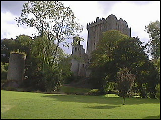
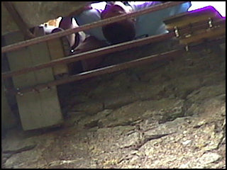

Blarney just 8km (5 miles) from Cork City is set in beautiful wooded countryside, it is an ideal base to visit the many wonderful sights of Cork and Kerry. Steeped in history and magical charm, Blarney village offers the visitor a host of wonderful things to do and places to discover.
One of the finest things that impresses the first time visitor is the well preserved village square. Blarney is one of the few villages in Ireland which has such a fine amenity, and today it continues to be a focal point of village life. In Tudor style, the village has developed around the square which is owned and carefully maintained by Blarney Castle Estate. The population of Blarney is small, approximately 2,000 and the people are friendly and welcoming towards the visitor.
 Some great sights to visit include the legendary Blarney Stone at Blarney Castle. For many of the visitors to Blarney, their first priority is to kiss the famous Blarney Stone high up on the Castle battlements. Tradition holds that those who kiss the Blarney Stone will be endowed with the gift of eloquence - "the gift of the gab", as the locals call it.
Some great sights to visit include the legendary Blarney Stone at Blarney Castle. For many of the visitors to Blarney, their first priority is to kiss the famous Blarney Stone high up on the Castle battlements. Tradition holds that those who kiss the Blarney Stone will be endowed with the gift of eloquence - "the gift of the gab", as the locals call it.
"There is a stone that whoever kisses never misses to grow eloquent, he may clamber to a lady's chamber or become a member of parliament".
Over 200,000 people visit Blarney Castle each year. The castle is situated in over a thousand acres of magnificent woodland, making it the ideal place to take walks to enjoy the clean fresh environment of Blarney.
Blarney boasts some of the finest accommodation premises in Ireland. These include hotels, guesthouses, a caravan and camping park, town and country homes and farmhouses. Approved self-catering accommodation is also available. Blarney offers accommodation to suit all tastes and budgets.
Shopping is a pleasure in the village where there are a number of excellent outlets, including the world famous Blarney Woollen Mills. Established in 1824, the outlet has become one of the largest craft shops in Ireland and is renowned for its quality produce.
Blarney offers a superb variety of recreational pursuits to suit all ages. The golfer has several excellent eighteen hole courses to choose from; two within five miles of the village. There is a network of quiet country lanes for the walking enthusiast. Locally, you can fish for salmon, wild brown trout or coarse fish. There are several sports and leisure centres for fitness buffs located in the area, which offer everything from swimming to gymnasium facilities. For families there's a delightful woodland farm which features a meandering nature trail offering a mixture of fun, education and relaxation. | |
Blarney Castle was originally a timber hunting lodge built in the 10th century, which was replaced by a stone castle in 1210. The present day construction was completed by Dermot McCarthy, King of Munster in 1446. The Castle remained the ancestral stronghold of the McCarthy family until the arrival of Oliver Cromwell with cannon guns in 1646. Fifteen years later with the arrival of King Charles II on the English throne saw the return of the McCarthys to the Castle.
Following the Battle of the Boyne in 1690, all Irish chiefs were stripped of their powers and the McCarthys were again forced to leave Blarney Castle. The Castle was sold to Sir James Jefferyes, Governor of Cork in 1703. The Castle is now owned and managed by the Trustees of the Blarney Castle Estate.
Kissing the Blarney stone
The world famous Blarney Stone is situated high up in the battlements of the castle. Follow one of the several long, stone spiral staircases up to the top and enjoy the spectacular views of the lush green Irish countryside, Blarney House and The Village of Blarney.
The stone is believed to be half of the Stone of Scone which originally belonged to Scotland. Scottish Kings were crowned over the stone, because it was believed to have special powers.
The stone was given to Cormac McCarthy by Robert the Bruce in 1314 in return for his support in the Battle of Bannockburn.
Queen Elizabeth I wanted Irish chiefs to agree to occupy their own lands under title from her. Cormac Teige McCarthy, the Lord of Blarney, handled every Royal request with subtle diplomacy, promising loyalty to the Queen without "giving in". Elizabeth proclaimed that McCarthy was giving her "a lot of Blarney", thus giving rise to the legend.

You too can acquire the gift of eloquence by kissing the stone


{kind=link}